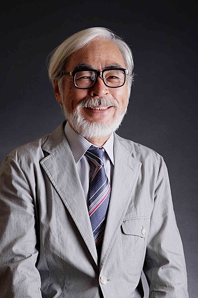
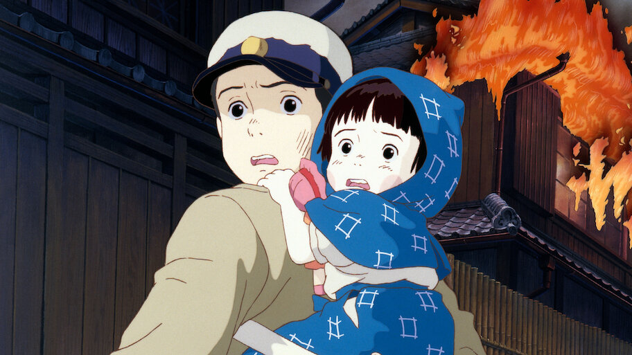

Mestre da animação japonesa, conhecido por criar mundos poéticos e fantásticos que exploram temas como natureza, infância e a complexidade humana.
Hayao Miyazaki é um animador, cineasta, roteirista, escritor e artista de mangá japonês. Co-fundador do Studio Ghibli, uma renomada produtora de cinema e animação, Miyazaki conquistou reconhecimento e aclamação internacional pela qualidade de seus longas-metragens animados, que ele geralmente escreve e dirige. É amplamente considerado um dos maiores nomes da história da animação japonesa.
Carreira
A carreira de Hayao Miyazaki é marcada por uma trajetória brilhante e inovadora na animação japonesa. Ele começou nos anos 1960 como animador em estúdios tradicionais, como Toei Animation. Em 1979, dirigiu seu primeiro longa-metragem, O Castelo de Cagliostro. O reconhecimento veio com Nausicaä do Vale do Vento (1984), que impulsionou a fundação do Studio Ghibli, em 1985.
A partir daí, Miyazaki dirigiu uma sequência de obras aclamadas, como Meu Amigo Totoro, Princesa Mononoke, A Viagem de Chihiro (vencedor do Oscar de Melhor Animação em 2003), O Castelo Animado e Ponyo. Ele é conhecido por criar mundos ricos, com forte apelo emocional, personagens femininas fortes e temas como natureza, pacifismo e crítica à guerra.
Apesar de ter anunciado aposentadoria várias vezes, sempre retornou com novos projetos. Em 2023, lançou O Menino e a Garça, mais uma vez aclamado mundialmente. Ao longo de décadas, Miyazaki consolidou-se como um dos maiores mestres da animação global, influenciando gerações de artistas e cineastas.
Conquistas e Realizações
Obras Mais Icônicas
- Nausicaä do Vale do Vento (1984) – Estabeleceu sua reputação como diretor visionário e levou à criação do Studio Ghibli.
- Meu Amigo Totoro (1988) – Tornou-se símbolo do Studio Ghibli e ícone da cultura japonesa.
- Princesa Mononoke (1997) – Sucesso de bilheteria no Japão; destacou-se por temas ecológicos e complexidade moral.
- A Viagem de Chihiro (2001) – Sua obra mais famosa; primeiro e único anime a vencer o Oscar de Melhor Animação.
- O Castelo Animado (2004) – Indicado ao Oscar; conhecido por sua estética única e crítica à guerra.
- O Menino e a Garça (2023) – Retorno triunfal após anos afastado; venceu o Oscar de Melhor Animação em 2024.
Prêmios e Reconhecimentos
- Oscar de Melhor Animação: A Viagem de Chihiro (2003)
- Oscar de Melhor Animação: O Menino e a Garça (2024)
- Oscar Honorário (2014): por sua contribuição ao cinema mundial
- Urso de Ouro Honorário (Berlim, 2014): por seu conjunto da obra
- Vários prêmios da Japan Academy Prize, Annie Awards e festivais internacionais
Impacto e Legado
- Fundou o Studio Ghibli, um dos estúdios de animação mais respeitados do mundo.
- Revolucionou a animação com histórias profundas, visuais artesanais e temas adultos.
- Influenciou gerações de animadores e cineastas ao redor do mundo (como Guillermo del Toro, Pixar, etc.).
- Promoveu a valorização da animação como arte cinematográfica e não apenas entretenimento infantil.

O Serviço de Entregas da Kiki - 1989
Curiosidade
Miyazaki posteriormente admitiu que sentia-se culpado por sua família ter lucrado com a guerra e com isso terem conseguido manter um estilo de vida afluente.
Túmulho dos Vagalumes
Os irmãos Setsuko e Seita vivem no Japão em meio a Segunda Guerra. Após a morte da mãe num bombardeio americano e a convocação do pai para a Guerra, eles vão morar com alguns parentes. Insatisfeitos, saem da cidade e acabam num abrigo isolado na floresta, onde lutam contra a fome e as doenças e se divertem com as luzes dos vagalumes.
Polêmica
A polêmica entre Hayao Miyazaki e a inteligência artificial começou em 2016, durante a apresentação de uma animação gerada por IA por desenvolvedores do Studio Ghibli. A ferramenta criava movimentos corporais grotescos, e Miyazaki reagiu com forte crítica, dizendo que achava aquilo "uma ofensa à vida" e que "jamais usaria algo assim em sua arte".
Em 2025, a moda de usar a inteligência artificial para fazer imagens no estilo da animação do estúdio japonês Ghibli se tornou uma febre nas redes sociais.
Miyazaki declara: Estou completamente enojado. Se você realmente quer fazer coisas assustadoras, pode ir em frente e fazer. Eu nunca desejaria incorporar essa tecnologia ao meu trabalho. Sinto fortemente que isso é um insulto à própria vida.